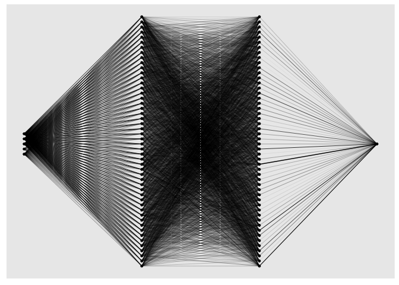

‘cito’ simplifies the building and training of (deep) neural networks by relying on standard R syntax and familiar methods from statistical packages. Model creation and training can be done with a single line of code. Furthermore, all generic R methods such as print or plot can be used on the fitted model. At the same time, ‘cito’ is computationally efficient because it is based on the deep learning framework ‘torch’ (with optional GPU support). The ‘torch’ package is native to R, so no Python installation or other API is required for this package.
Installation
Before installing ‘cito’ make sure ‘torch’ is installed. See the code chunk below if you are unsure on how to check this
# check package
if(!require('torch',quietly = TRUE)) install.packages('torch')
library('torch')
#install torch
if(!torch_is_installed()) install_torch()If you have trouble installing ‘torch’, please visit the website of the ‘torch’ package or create an issue on our github website. We are happy to help you.
A stable version of cito from CRAN can be installed with:
install.packages("cito")The development version from GitHub can be installed by:
if(!require('devtools', quietly = TRUE)) install.packages('devtools')
devtools::install_github('citoverse/cito')Example
Once installed, the main function dnn() can be used. See the example below. A more in depth explanation can be found in the vignettes or here under articles.
- Fit model with bootstrapping (to obtain confidence intervals). All methods work with and without bootstrapping
- Check if models have converged (compare training loss against baseline loss (=intercept only model)):
analyze_training(nn.fit)
# At 1st glance, the networks converged since the loss is lower than the baseline loss and the training loss is on a plateau at the end of the training.- Plot model architecture
plot(nn.fit)
- ‘cito’ supports many advanced functionalities such as common explainable AI metrics that can be used for inference (i.e. to interpret the models). Variable importance (similar to a variation partitioning) and linear effects are directly returned by the
summaryfunction:
summary(nn.fit)
## Summary of Deep Neural Network Model
##
## ── Feature Importance
## Importance Std.Err Z value Pr(>|z|)
## Sepal.Width → 1.205 0.507 2.38 0.0175 *
## Petal.Length → 27.720 10.575 2.62 0.0088 **
## Petal.Width → 0.677 0.637 1.06 0.2876
## Species → 1.270 1.096 1.16 0.2465
## ---
## Signif. codes: 0 '***' 0.001 '**' 0.01 '*' 0.05 '.' 0.1 ' ' 1
##
## ── Average Conditional Effects
## ACE Std.Err Z value Pr(>|z|)
## Sepal.Width → 0.5283 0.0828 6.38 1.8e-10 ***
## Petal.Length → 0.7253 0.0649 11.18 < 2e-16 ***
## Petal.Width → -0.1924 0.1396 -1.38 0.17
## ---
## Signif. codes: 0 '***' 0.001 '**' 0.01 '*' 0.05 '.' 0.1 ' ' 1
##
## ── Standard Deviation of Conditional Effects
## ACE Std.Err Z value Pr(>|z|)
## Sepal.Width → 0.1495 0.0409 3.66 0.00026 ***
## Petal.Length → 0.1291 0.0396 3.26 0.00111 **
## Petal.Width → 0.0529 0.0311 1.70 0.08878 .
## ---
## Signif. codes: 0 '***' 0.001 '**' 0.01 '*' 0.05 '.' 0.1 ' ' 1- Predict (with confidence intervals):
Hyperparameter tuning
Certain arguments/parameters such as the architecture, activation function, and the learning rate can be automatically tuned under crossvalidation (for a full list, see ?dnn). Parameters that should be tuned, can be flagged by using the function tune() instead of a hyperparameter value:
nn.fit <- dnn(Sepal.Length~., data = datasets::iris, lr = tune(0.0001, 0.1))
## Starting hyperparameter tuning...
## Fitting final model...
nn.fit$tuning
## # A tibble: 10 × 5
## steps test train models lr
## <int> <dbl> <dbl> <list> <dbl>
## 1 1 Inf 0 <list [1]> 0.0887
## 2 2 Inf 0 <list [1]> 0.0264
## 3 3 1.13 0 <list [1]> 0.0416
## 4 4 0.757 0 <list [1]> 0.0373
## 5 5 Inf 0 <list [1]> 0.0175
## 6 6 Inf 0 <list [1]> 0.0581
## 7 7 0.526 0 <list [1]> 0.00348
## 8 8 Inf 0 <list [1]> 0.0179
## 9 9 Inf 0 <list [1]> 0.0687
## 10 10 Inf 0 <list [1]> 0.0497The tuning can be configured with tuning=config_tuning(). After tuning, a final model trained with the best hyperparameters is returned. Hyperparameter combinations that do not achieve a loss below the baseline loss will be aborted early and not fully cross-validated. These runs are given a test loss of infinity.
Advanced
We can pass custom loss functions to ‘cito’, optionally with additional parameters that should be fitted. The only requirement is that all calculations must be written using the ‘torch’ package (cito automatically converts the initial values of the custom parameters to ‘torch’ objects).
We use a multivariate normal distribution as the likelihood function and we want to parameterize/fit the covariance matrix of the multivariate normal distribution:
We need one helper function,
create_cov()that builds the covariance matrix based on a lower triangular matrix and the diagonals (low-rank approximation of the covariance matrix)We need our custom likelihood function which uses the
distr_multivariate_normal(…)function from the torch package:
create_cov = function(L, Diag) {
return(torch::torch_matmul(L, L$t()) + torch::torch_diag(Diag$exp()+0.001))
}
custom_loss_MVN = function(true, pred) {
Sigma = create_cov(SigmaPar, SigmaDiag)
logLik = torch::distr_multivariate_normal(pred,
covariance_matrix = Sigma)$
log_prob(true)
return(-logLik$mean())
}- We use “SigmaPar” and “SigmaDiag” as parameters that we want to optimize along the DNN. We will pass a named list with starting values to ‘cito’ and ‘cito’ will infer automatically (based on the R shape) the shape of the parameters:
nn.fit<- dnn(cbind(Sepal.Length, Sepal.Width, Petal.Length)~.,
data = datasets::iris,
lr = 0.01,
epochs = 200L,
loss = custom_loss_MVN,
verbose = FALSE,
plot = FALSE,
custom_parameters =
list(SigmaDiag = rep(0, 3), # Our parameters with starting values
SigmaPar = matrix(rnorm(6, sd = 0.001), 3, 2)) # Our parameters with starting values
)Estimated covariance matrix:
as.matrix(create_cov(nn.fit$loss$parameter$SigmaPar,
nn.fit$loss$parameter$SigmaDiag))
## [,1] [,2] [,3]
## [1,] 0.29110381 0.06862528 0.13878071
## [2,] 0.06862528 0.10975803 0.04459281
## [3,] 0.13878071 0.04459281 0.16815922Empirical covariance matrix: